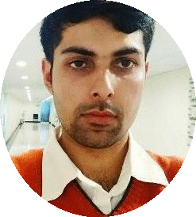

|
Fahad Shamshad
fahad.shamshad3 <at> gmail.com
I am a PhD student at the Computer Vision Department, MBZUAI, working with Dr. Karthik Nandakumar and Dr. Salman Khan. My research focuses on safeguarding visual content in the era of generative AI through privacy-preserving methods, robust concept erasure, and reliable watermarking techniques. I work on defenses against malicious editing and unauthorized personalization, aiming to ensure the safe, ethical, and responsible deployment of generative models.
Email /
Google Scholar /
LinkedIn
|

|
News
News
- TrojanWave accepted as Oral at EMNLP 2025.
- Face Anonymixer accepted as a Spotlight Poster at IJCB 2025 (the flagship conference in biometrics).
- STEREO accepted as a Highlight at CVPR 2025.
- Won the NeurIPS 2024 Invisible Watermark Removal Challenge across black-box and beige-box tracks among 120+ teams.
- Two papers accepted at MICCAI 2024: BaPLe and PromptSmooth.
- Book chapter published in Deep Learning for Medical Image Analysis, The MICCAI Society Book Series.
- Invited reviewer for IEEE TPAMI, TIP, TCI, TNNLS, TMI, and Medical Image Analysis, as well as for NeurIPS and CVPR workshops.
- Received merit-based Teaching Assistantship during MS and selected for top-tier ML summer schools (Oxford, Skoltech, and Asian ML School).
|
|
|